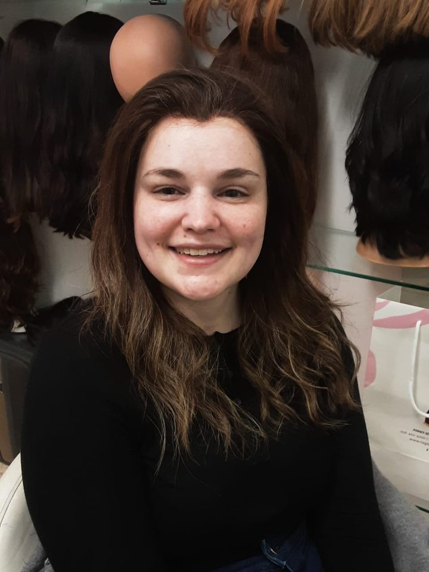
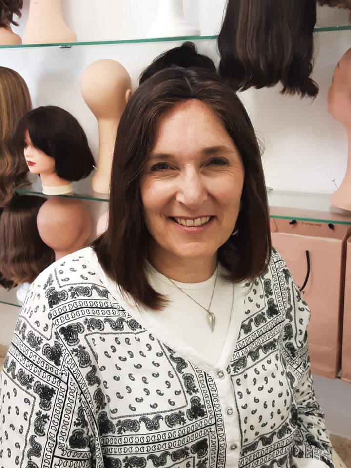
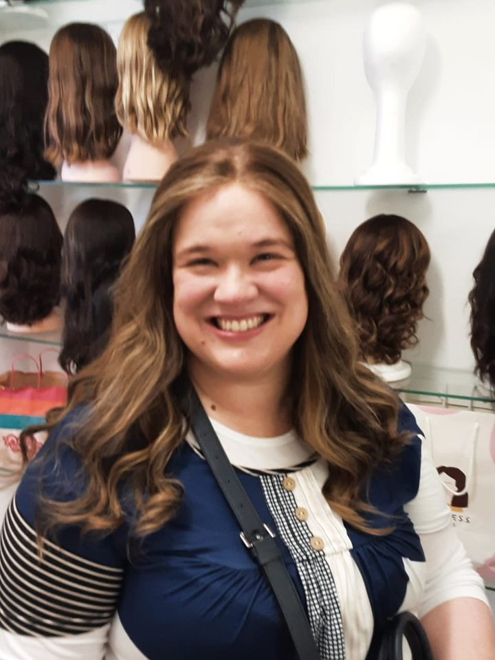
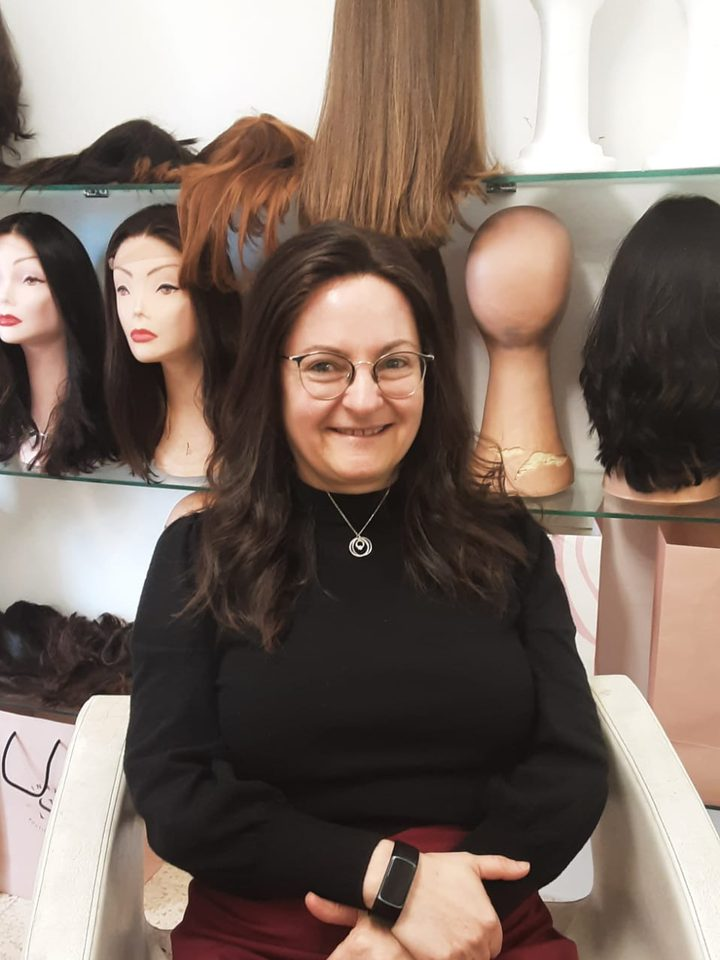
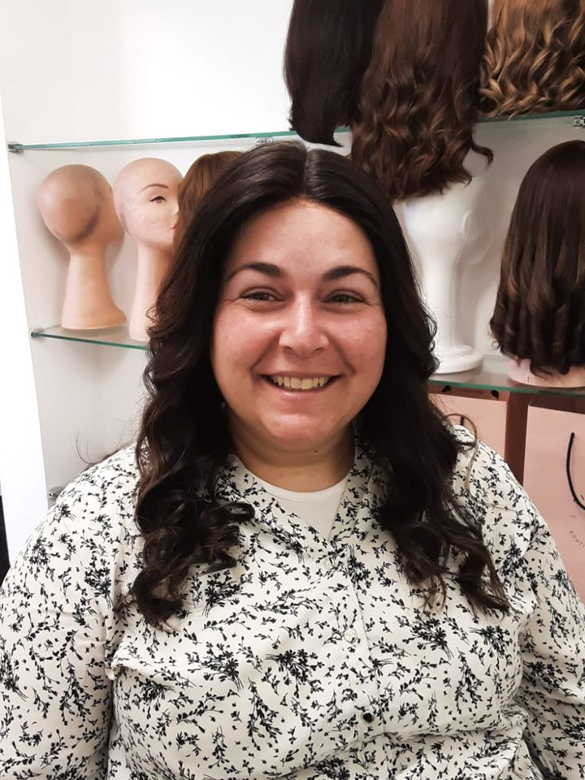
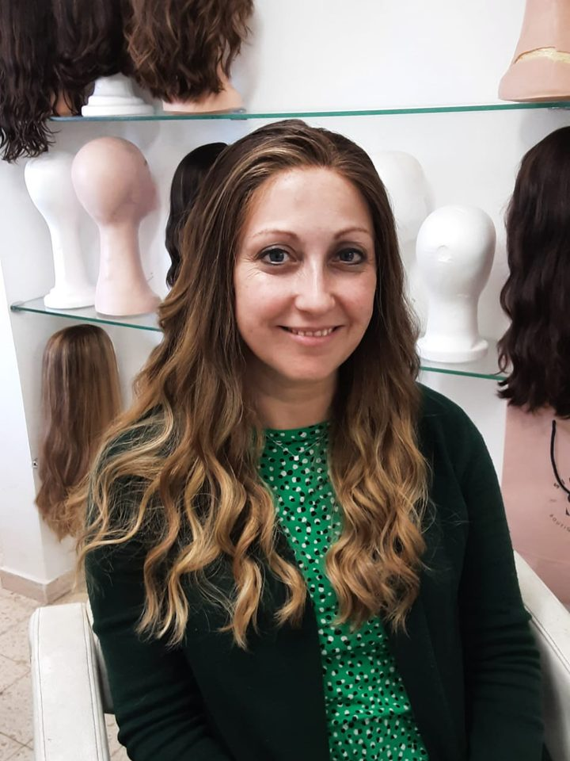
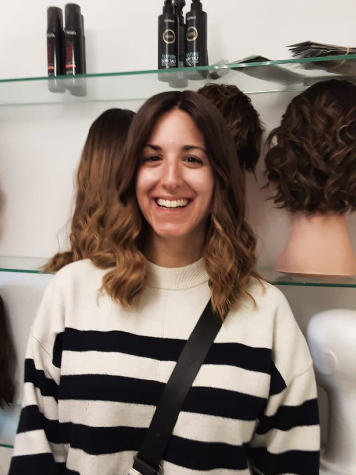
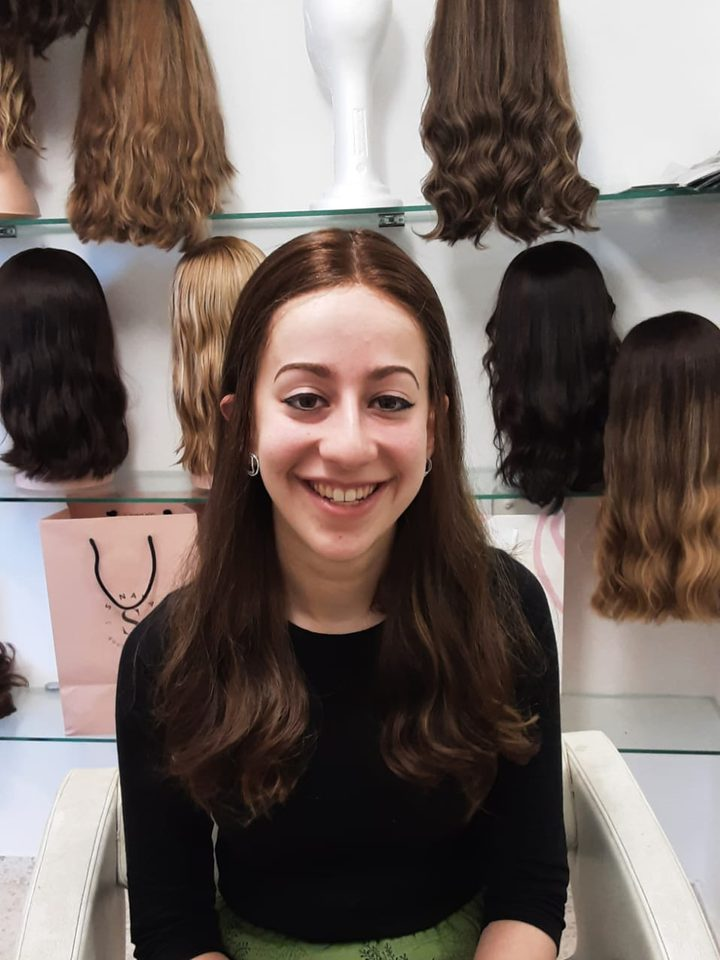

Styling Mastery
Ten in-depth lessons: curls, blow-dry techniques, volume, tool control.
₪8,000Michal Simkin, boutique wig salon and academy
We create wigs that are a joy to wear, because when your wig feels right, you feel right.








That's why we begin by listening: to your needs, your lifestyle, how you want to look and feel. Then we design your wig around that vision.
Maybe the cut feels heavy, the balance is off, or it never really fit from the start. With creative cutting, advanced styling and careful attention to detail, we rework the wig you had to make do with into one that feels authentically you.
What clients said about the wig they walked in with, and what they said after. Every pair is one woman's own review.
"I had a sheitl I wore regularly, but every time I put it on I was frustrated. Instead of throwing it out, I brought it to Michal. Immediately she saw the problems and brought it back to life. I can't believe my new look is from the same sheitl I used to dread wearing."Debbie Burack
"I came with a tight budget, after three other wig places and hating all my wigs since I got married. She had a ton of options, tried so many on me, honest opinion, no pressure to buy. Two years later I still love the wig I got."Yael Stoolback
"She transformed my 'it's fine' wig, a hand-me-down from my aunt, into something I actually think is cute, light, and works amazingly for me."Miriam Campbell
Professional wig styling and cutting, taught in person: demonstrations, then hands-on practice. Starts 3 November 2026, Sunday and Tuesday mornings at 10:00. Ten students at most.
Ten in-depth lessons: curls, blow-dry techniques, volume, tool control.
₪8,000Nine advanced lessons: wig construction, weight, balance, natural flow.
₪8,000A private group for ongoing support: pricing questions, real-world guidance.
Includedwith either course₪16,000 separately. Enrol early and the toolkit, worth ₪3,000, is included.
Chaya Basya took the course. She now runs her own salon in Ramat Beit Shemesh Daled, with a clientele of her own.Chaya Basya, graduate of the academy
I'd be honored to get to know you and create the wig that makes you look and feel your best. I can't wait to meet you.
MichalBet Shemesh
Consultation ₪100. Sunday to Thursday, 10 to 2, by appointment. English and Hebrew. Custom wigs, cuts and transformations, wash and sets, handwork, repairs, cap adjustments, baby hairs, colour.
Michal Simkin, Bet Shemesh, on MyIsraelRental. Every photograph on this page is hers.